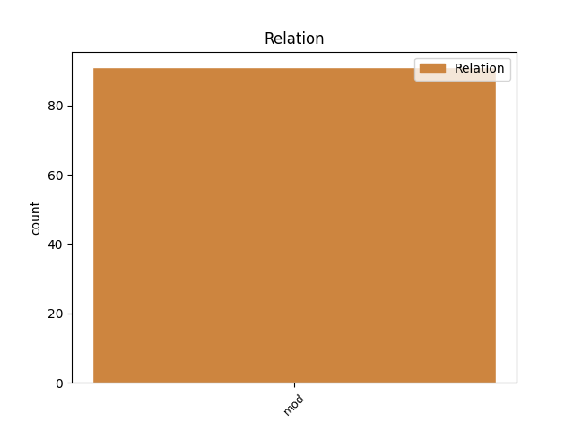

Distribution of features within this leaf

Agreement Rules sorted by frequency.
- When the dependent token is the modifer(mod) of the head token, and the dependent token is PROPN.
1 Ён _ _ _ _ 0 _ _ _
2 плыў _ _ _ _ 0 _ _ _
3 па _ _ _ _ 0 _ _ _
4 Мускуснай Мускусная PROPN JJL Case=Loc|Degree=Pos|Gender=Fem|Number=Sing 5 mod _ _
5 затоцы затока NOUN NN Animacy=Inan|Case=Loc|Gender=Fem|Number=Sing 0 _ _ _
6 , _ _ _ _ 0 _ _ _
7 якая _ _ _ _ 0 _ _ _
8 вяла _ _ _ _ 0 _ _ _
9 яго _ _ _ _ 0 _ _ _
10 да _ _ _ _ 0 _ _ _
11 галоўнага _ _ _ _ 0 _ _ _
12 возера _ _ _ _ 0 _ _ _
13 і _ _ _ _ 0 _ _ _
14 галоўнай _ _ _ _ 0 _ _ _
15 з _ _ _ _ 0 _ _ _
16 яго _ _ _ _ 0 _ _ _
17 хацін _ _ _ _ 0 _ _ _
18 і _ _ _ _ 0 _ _ _
19 была _ _ _ _ 0 _ _ _
20 адным _ _ _ _ 0 _ _ _
21 з _ _ _ _ 0 _ _ _
22 асноўных _ _ _ _ 0 _ _ _
23 участкаў _ _ _ _ 0 _ _ _
24 яго _ _ _ _ 0 _ _ _
25 палявання _ _ _ _ 0 _ _ _
26 . _ _ _ _ 0 _ _ _
1 I _ _ _ _ 0 _ _ _
2 была _ _ _ _ 0 _ _ _
3 яшчэ _ _ _ _ 0 _ _ _
4 адна адна NUM PRED Case=Nom|Gender=Fem|Number=Sing 12 mod _ SpaceAfter=No
5 , _ _ _ _ 0 _ _ _
6 апошняя _ _ _ _ 0 _ _ _
7 , _ _ _ _ 0 _ _ _
8 у _ _ _ _ 0 _ _ _
9 гонар _ _ _ _ 0 _ _ _
10 Більба _ _ _ _ 0 _ _ _
11 , _ _ _ _ 0 _ _ _
12 неспадзяванка неспадзяванка NOUN NNP Animacy=Inan|Case=Nom|Gender=Fem|Number=Sing 0 _ _ _
13 , _ _ _ _ 0 _ _ _
14 якая _ _ _ _ 0 _ _ _
15 ( _ _ _ _ 0 _ _ _
16 на _ _ _ _ 0 _ _ _
17 што _ _ _ _ 0 _ _ _
18 Гэндальф _ _ _ _ 0 _ _ _
19 і _ _ _ _ 0 _ _ _
20 спадзяваўся _ _ _ _ 0 _ _ _
21 ) _ _ _ _ 0 _ _ _
22 страшэнна _ _ _ _ 0 _ _ _
23 напалохала _ _ _ _ 0 _ _ _
24 хобітаў _ _ _ _ 0 _ _ _
25 . _ _ _ _ 0 _ _ _
1 Але _ _ _ _ 0 _ _ _
2 вось _ _ _ _ 0 _ _ _
3 у _ _ _ _ 0 _ _ _
4 той _ _ _ _ 0 _ _ _
5 самы самы DET _ Case=Acc|Gender=Masc|Number=Sing 6 mod _ _
6 час час NOUN _ Animacy=Inan|Case=Acc|Gender=Masc|Number=Sing 0 _ _ _
7 , _ _ _ _ 0 _ _ _
8 даўным-даўно _ _ _ _ 0 _ _ _
9 , _ _ _ _ 0 _ _ _
10 жыў _ _ _ _ 0 _ _ _
11 адзін _ _ _ _ 0 _ _ _
12 такі _ _ _ _ 0 _ _ _
13 Слон _ _ _ _ 0 _ _ _
14 , _ _ _ _ 0 _ _ _
15 або _ _ _ _ 0 _ _ _
16 , _ _ _ _ 0 _ _ _
17 лепш _ _ _ _ 0 _ _ _
18 сказаць _ _ _ _ 0 _ _ _
19 , _ _ _ _ 0 _ _ _
20 Слонік _ _ _ _ 0 _ _ _
21 , _ _ _ _ 0 _ _ _
22 які _ _ _ _ 0 _ _ _
23 быў _ _ _ _ 0 _ _ _
24 страшэнна _ _ _ _ 0 _ _ _
25 дапытлівы _ _ _ _ 0 _ _ _
26 , _ _ _ _ 0 _ _ _
27 і _ _ _ _ 0 _ _ _
28 каго _ _ _ _ 0 _ _ _
29 , _ _ _ _ 0 _ _ _
30 бывала _ _ _ _ 0 _ _ _
31 , _ _ _ _ 0 _ _ _
32 ні _ _ _ _ 0 _ _ _
33 ўбачыць _ _ _ _ 0 _ _ _
34 , _ _ _ _ 0 _ _ _
35 да _ _ _ _ 0 _ _ _
36 ўсіх _ _ _ _ 0 _ _ _
37 прыстае _ _ _ _ 0 _ _ _
38 з _ _ _ _ 0 _ _ _
39 роспытамі _ _ _ _ 0 _ _ _
40 . _ _ _ _ 0 _ _ _
Disagree Examples:
1 Як _ _ _ _ 0 _ _ _
2 растлумачылі _ _ _ _ 0 _ _ _
3 Тэлеграфу _ _ _ _ 0 _ _ _
4 ў _ _ _ _ 0 _ _ _
5 міністэрстве міністэрства NOUN NN Animacy=Inan|Case=Loc|Gender=Neut|Number=Sing 0 _ _ _
6 эканомікі _ _ _ _ 0 _ _ _
7 Беларусі Беларусь PROPN NNP Animacy=Inan|Case=Gen|Gender=Fem|Number=Sing 5 mod _ SpaceAfter=No
8 , _ _ _ _ 0 _ _ _
9 адным _ _ _ _ 0 _ _ _
10 з _ _ _ _ 0 _ _ _
11 прыярытэтных _ _ _ _ 0 _ _ _
12 напрамкаў _ _ _ _ 0 _ _ _
13 работы _ _ _ _ 0 _ _ _
14 Daeryook _ _ _ _ 0 _ _ _
15 & _ _ _ _ 0 _ _ _
16 Aju _ _ _ _ 0 _ _ _
17 Internatonal _ _ _ _ 0 _ _ _
18 Law _ _ _ _ 0 _ _ _
19 Firm _ _ _ _ 0 _ _ _
20 з'яўляецца _ _ _ _ 0 _ _ _
21 юрыдычнае _ _ _ _ 0 _ _ _
22 суправаджэнне _ _ _ _ 0 _ _ _
23 замежнай _ _ _ _ 0 _ _ _
24 экспансіі _ _ _ _ 0 _ _ _
25 карэйскага _ _ _ _ 0 _ _ _
26 бізнэсу _ _ _ _ 0 _ _ _
27 . _ _ _ _ 0 _ _ _
1 Паводле _ _ _ _ 0 _ _ _
2 дасягнутых _ _ _ _ 0 _ _ _
3 дамоўленасцяў _ _ _ _ 0 _ _ _
4 , _ _ _ _ 0 _ _ _
5 Нацыянальнае _ _ _ _ 0 _ _ _
6 агенцтва агенцтва NOUN NN Animacy=Inan|Case=Nom|Gender=Neut|Number=Sing 0 _ _ _
7 інвестыцый _ _ _ _ 0 _ _ _
8 і _ _ _ _ 0 _ _ _
9 прыватызацыі _ _ _ _ 0 _ _ _
10 Беларусі Беларусь PROPN NNP Animacy=Inan|Case=Gen|Gender=Fem|Number=Sing 6 mod _ _
11 і _ _ _ _ 0 _ _ _
12 Daeryook _ _ _ _ 0 _ _ _
13 & _ _ _ _ 0 _ _ _
14 Aju _ _ _ _ 0 _ _ _
15 Internatonal _ _ _ _ 0 _ _ _
16 Law _ _ _ _ 0 _ _ _
17 Firm _ _ _ _ 0 _ _ _
18 маюць _ _ _ _ 0 _ _ _
19 намер _ _ _ _ 0 _ _ _
20 праводзіць _ _ _ _ 0 _ _ _
21 двухбаковыя _ _ _ _ 0 _ _ _
22 кансультацыі _ _ _ _ 0 _ _ _
23 і _ _ _ _ 0 _ _ _
24 абмен _ _ _ _ 0 _ _ _
25 інфармацыяй _ _ _ _ 0 _ _ _
26 з _ _ _ _ 0 _ _ _
27 мэтай _ _ _ _ 0 _ _ _
28 вывучэння _ _ _ _ 0 _ _ _
29 магчымасцяў _ _ _ _ 0 _ _ _
30 прыцягнення _ _ _ _ 0 _ _ _
31 прамых _ _ _ _ 0 _ _ _
32 замежных _ _ _ _ 0 _ _ _
33 інвестыцый _ _ _ _ 0 _ _ _
34 у _ _ _ _ 0 _ _ _
35 Беларусь _ _ _ _ 0 _ _ _
36 . _ _ _ _ 0 _ _ _
1 Бакі _ _ _ _ 0 _ _ _
2 абмеркавалі _ _ _ _ 0 _ _ _
3 перспектывы _ _ _ _ 0 _ _ _
4 інвестсупрацоўніцтва інвестсупрацоўніцтва NOUN NN Animacy=Inan|Case=Gen|Gender=Neut|Number=Sing 0 _ _ _
5 Беларусі Беларусь PROPN NNP Animacy=Inan|Case=Gen|Gender=Fem|Number=Sing 4 mod _ _
6 з _ _ _ _ 0 _ _ _
7 карэйскімі _ _ _ _ 0 _ _ _
8 кампаніямі _ _ _ _ 0 _ _ _
9 ў _ _ _ _ 0 _ _ _
10 сферах _ _ _ _ 0 _ _ _
11 транспартнай _ _ _ _ 0 _ _ _
12 інфраструктуры _ _ _ _ 0 _ _ _
13 , _ _ _ _ 0 _ _ _
14 нафтахіміі _ _ _ _ 0 _ _ _
15 , _ _ _ _ 0 _ _ _
16 машынабудавання _ _ _ _ 0 _ _ _
17 , _ _ _ _ 0 _ _ _
18 фармацэўтыкі _ _ _ _ 0 _ _ _
19 і _ _ _ _ 0 _ _ _
20 медыцыны _ _ _ _ 0 _ _ _
21 . _ _ _ _ 0 _ _ _
1 Жыхар жыхар NOUN NN Animacy=Anim|Case=Nom|Gender=Masc|Number=Sing 0 _ _ _
2 Рэчыцы Рэчыца PROPN NNP Animacy=Inan|Case=Gen|Gender=Fem|Number=Sing 1 mod _ SpaceAfter=No
3 , _ _ _ _ 0 _ _ _
4 які _ _ _ _ 0 _ _ _
5 адпачываў _ _ _ _ 0 _ _ _
6 18 _ _ _ _ 0 _ _ _
7 сакавіка _ _ _ _ 0 _ _ _
8 з _ _ _ _ 0 _ _ _
9 кампаніяй _ _ _ _ 0 _ _ _
10 на _ _ _ _ 0 _ _ _
11 беразе _ _ _ _ 0 _ _ _
12 Бярэзіны _ _ _ _ 0 _ _ _
13 , _ _ _ _ 0 _ _ _
14 праваліўся _ _ _ _ 0 _ _ _
15 пад _ _ _ _ 0 _ _ _
16 лёд _ _ _ _ 0 _ _ _
17 і _ _ _ _ 0 _ _ _
18 патануў _ _ _ _ 0 _ _ _
19 . _ _ _ _ 0 _ _ _
1 Жыхар _ _ _ _ 0 _ _ _
2 Рэчыцы _ _ _ _ 0 _ _ _
3 , _ _ _ _ 0 _ _ _
4 які _ _ _ _ 0 _ _ _
5 адпачываў _ _ _ _ 0 _ _ _
6 18 _ _ _ _ 0 _ _ _
7 сакавіка _ _ _ _ 0 _ _ _
8 з _ _ _ _ 0 _ _ _
9 кампаніяй _ _ _ _ 0 _ _ _
10 на _ _ _ _ 0 _ _ _
11 беразе бераг NOUN NN Animacy=Inan|Case=Loc|Gender=Masc|Number=Sing 0 _ _ _
12 Бярэзіны Бярэзіна PROPN NNP Animacy=Inan|Case=Gen|Gender=Fem|Number=Sing 11 mod _ SpaceAfter=No
13 , _ _ _ _ 0 _ _ _
14 праваліўся _ _ _ _ 0 _ _ _
15 пад _ _ _ _ 0 _ _ _
16 лёд _ _ _ _ 0 _ _ _
17 і _ _ _ _ 0 _ _ _
18 патануў _ _ _ _ 0 _ _ _
19 . _ _ _ _ 0 _ _ _